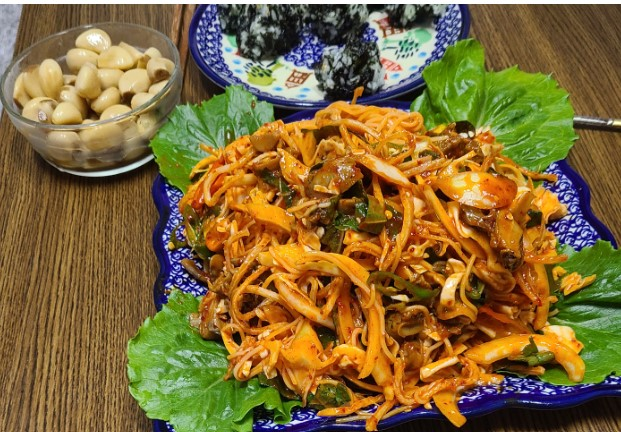

골뱅이무침
<재료>:골뱅이,양배추,당근,양파,오이,고추장,고춧가루,진간장,설탕,식초,다진마늘,참기름

1.양념장(고추장,고춧가루,진간장,설탕,식초,다진마늘,참기름,물).
2.골뱅이에 물을 빼고 골뱅이물을 양념장에 조금넣는다.
3.골뱅이랑 양념장을 버무리면 완성.
(tip)진미채도 같이 넣고 소면이랑 같이 먹어도 맛있어요./양념장에는 사이다!
또띠아피자
<재료>:또띠아,케찹,양파,소세지,치즈,(옥수수통조림)(피망)
1.또띠아를 후라이팬에 약불로 익히면서 소스를 바르고 재료를 올린다.
2.치즈(모짜렐라,체다)를 올리고 에어프라이어나 전자레인지에서 녹이면 완성
(tip)소세지 대신 해산물도 가능/케찹 대신 파스타소스 있으면 더 좋아요